Introduction
The Calendar module provides a unified, time-based view for managing CRM activities.
Key Features and Functionalities
1.1 Calendar Views
Purpose: offer flexible time-based perspectives on the schedule.
- Month View
- A monthly grid of activities.
- Week View
- Detailed weekly scheduling.
- Day View
- Focus on a single day.
- Year View
- A yearly overview of how activities are distributed.
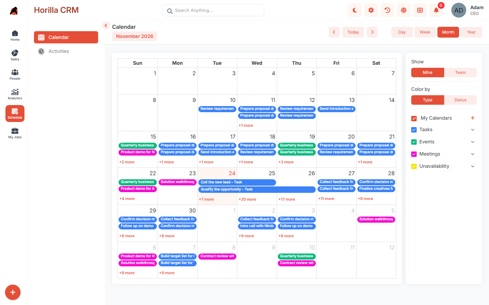
The sidebar can filter by team members and by status. In Team view, unavailability is shown for the members who remain after the filter. Color by Type / Status switches how events are coloured. An event popup can Open Related Record. All-day activities span whole days. An unavailability block can end earlier today; a date before today is still refused.
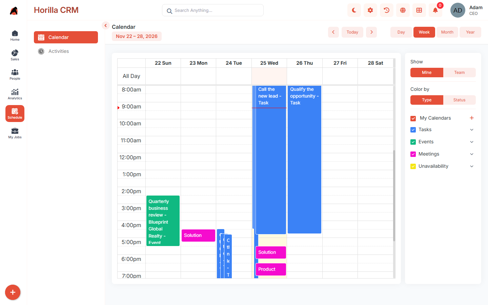
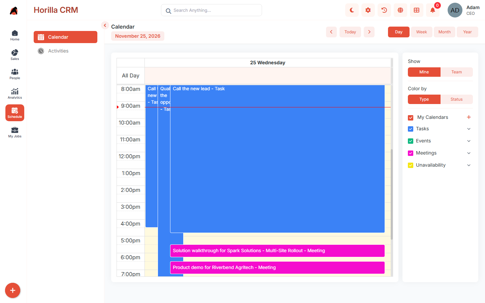
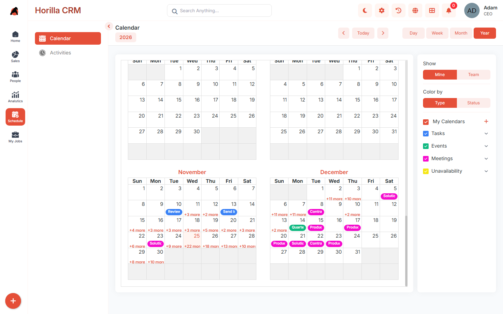
Move around the calendar with the Today, Previous and Next controls.
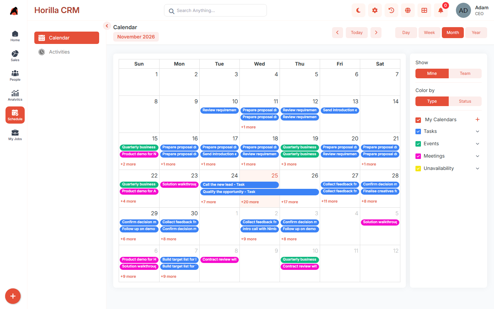
1.2 Activities and Activity Preference
Purpose: present activities on an interactive, colour-coded calendar.
- The supported activity types are Task, Event, Meeting and Unavailability.
- Activities are placed on the calendar at their start and end times.
- Colours are configurable per user and per activity type.
- The visible activity types can be filtered, so each user chooses which types to display.
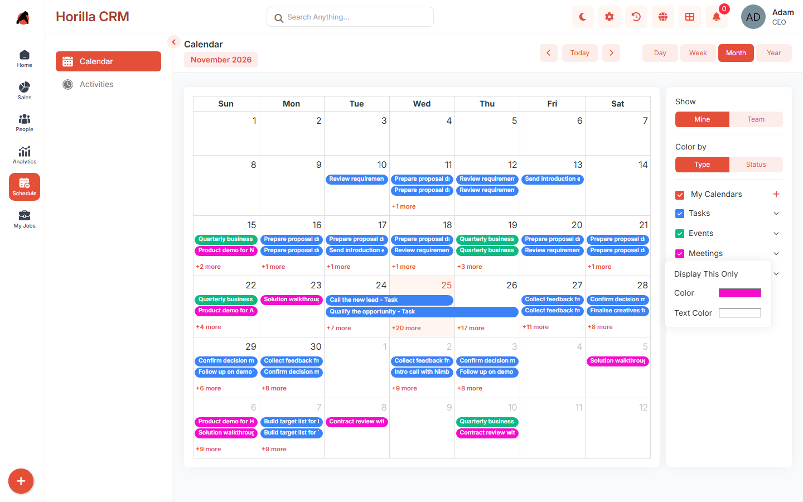
1.3 Creating a New Activity
Purpose: schedule CRM activities.
- Activities can be added directly from the calendar.
- Once saved, an activity appears immediately in the selected view.
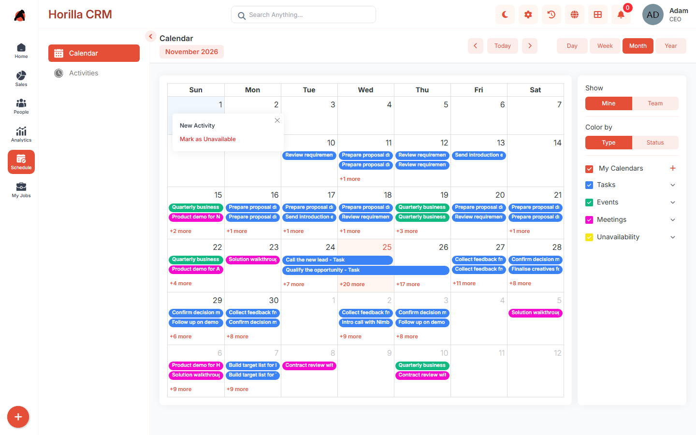
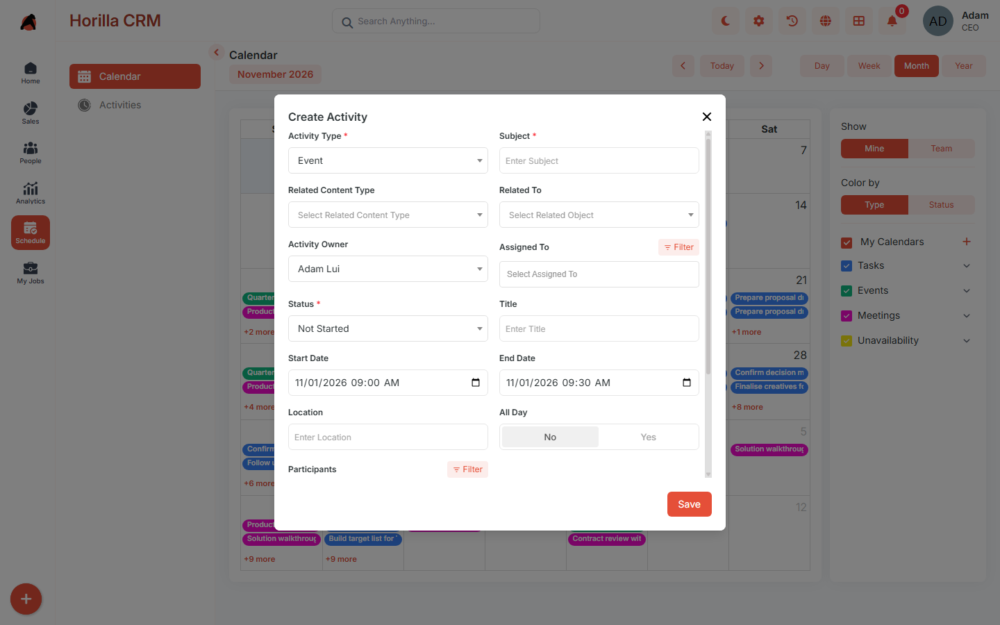
1.4 Activity Detail View
Purpose: give both quick and full access to an activity's information.
Short detail popup
- Opens when an activity is clicked on the calendar.
- Shows Subject, Description, Assigned User, Dates and Status.
- Quick actions: Edit, Delete, Mark Complete and Info.
Full detail view
- Opened from the Info action.
- Shows all fields, which can be edited inline.
- A History tab records status changes and reassignments.
- Progress is tracked, for example from Pending to Completed.
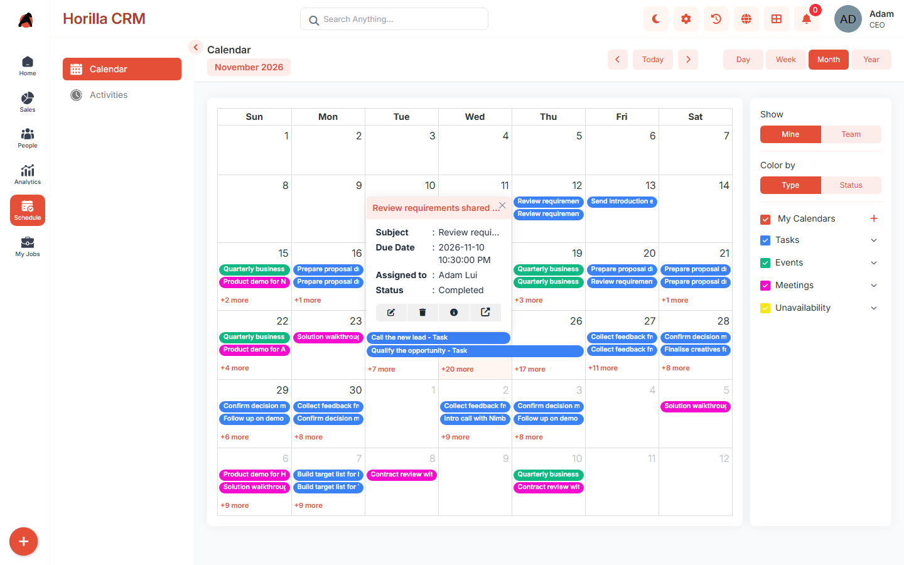
1.5 Unavailability Management
Purpose: block out time so scheduling conflicts are avoided.
- Mark unavailability for whole dates or for specific time slots.
- Unavailability is shown as its own activity type.
- Notes can record the reason for the unavailability.
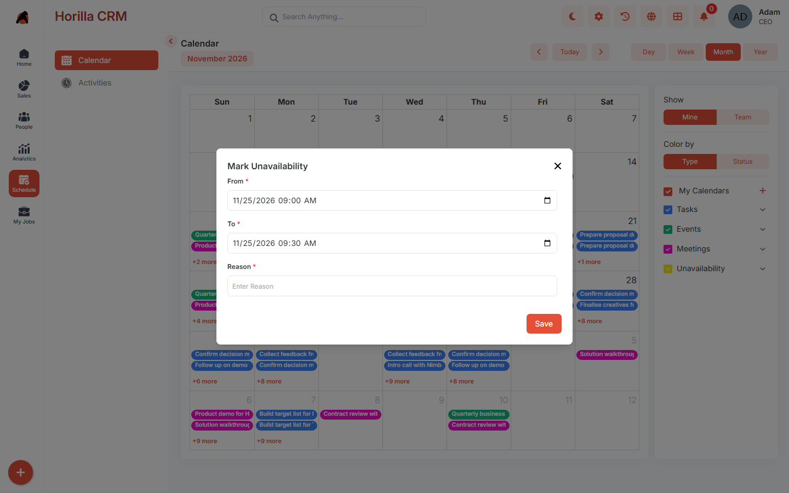
1.6 Custom Calendars
Purpose: overlay the calendar with records from any CRM module.
- Custom calendars are created with the + button beside My Calendars in the right sidebar.
- Records from the modules you are permitted to see appear as colour-coded events.
- Each custom calendar has its own visibility checkbox.
Creating a Custom Calendar
- Click the + button to open the Create Custom Calendar modal.
-
Complete the fields:
- Calendar Name
- Color
- Module
- Start Date Field
- End Date Field (optional)
- Display Name Field
- Conditions (optional)
- Click Save. The calendar appears in the sidebar and renders its events immediately.
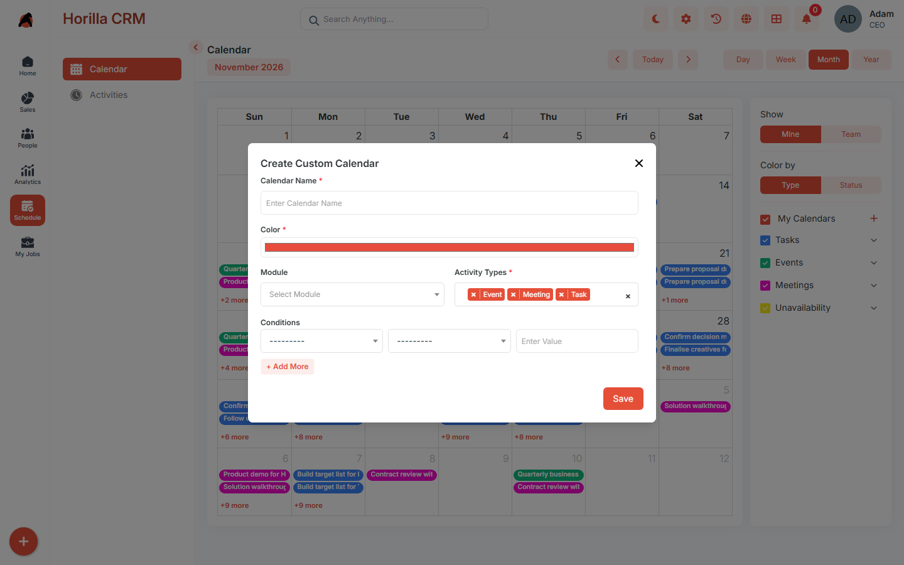
Custom Calendar Event Detail View
- Clicking an event opens a popup showing its title, Start Date and End Date.
- The Info button opens the full view of the linked record, where one is available.
Managing Custom Calendars
The sidebar dropdown for each custom calendar offers these actions:
- Display This Only
- Show only this calendar.
- Color
- Change the display colour; the change applies immediately.
- Update
- Edit the calendar, with its existing settings pre-filled.
- Delete
- Remove the calendar permanently, after a confirmation.
- Visibility checkbox
- Show or hide the calendar's events; the preference is saved automatically for each user.
Benefits
- Centralised scheduling of CRM activities.
- Visual clarity through the different views and colour coding.
- Productivity gains from acting on activities directly in the calendar.
- Conflict prevention through unavailability tracking.
- Stronger 360-degree engagement tracking, because activities are linked to records.
- Custom calendars give date-driven views of any module.